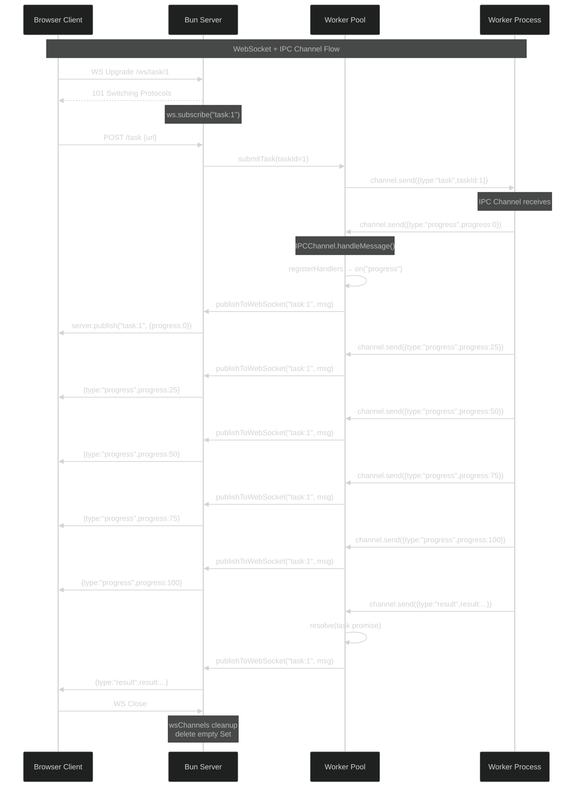

Transport-agnostic typed message passing — IPC, WebSocket, and (future) MessagePort.
High-level view of the Channel<TSend, TRecv> interface, BaseChannel abstract class, and transport implementations.

graph TB
subgraph "Channel Architecture"
subgraph "Interface Layer"
Channel["Channel<TSend, TRecv><br/>interface"]
BaseChannel["BaseChannel<TSend, TRecv><br/>abstract class"]
ChannelMessage["ChannelMessage<br/>{ type: string }"]
end
subgraph "Transport Implementations"
IPCChannel["IPCChannel<br/>parent ↔ worker"]
WSChannel["WSChannel<br/>server ↔ client"]
MPChannel["MessagePortChannel<br/>(future)"]
end
subgraph "IPC Transport (Bun.spawn)"
Parent["Parent Process<br/>pool.ts"]
Worker["Worker Process<br/>task-worker.ts"]
Parent -.->|"proc.send()"| Worker
Worker -.->|"process.send()"| Parent
end
subgraph "WebSocket Transport (Bun.serve)"
Server["Bun Server<br/>server.ts"]
Client["Browser Client<br/>/ws/task/:id"]
Server -.->|"ws.send() / publish()"| Client
Client -.->|"ws.send()"| Server
end
ChannelMessage --> BaseChannel
BaseChannel --> IPCChannel
BaseChannel --> WSChannel
BaseChannel -.-> MPChannel
IPCChannel --> Parent
IPCChannel --> Worker
WSChannel --> Server
WSChannel --> Client
end
style Channel fill:#4A90D9,color:#fff,stroke:#2C5F8A
style BaseChannel fill:#6B5B95,color:#fff,stroke:#4A4565
style IPCChannel fill:#50C878,color:#fff,stroke:#3A9D5C
style WSChannel fill:#FF6B6B,color:#fff,stroke:#CC5454
style MPChannel fill:#DDD,color:#999,stroke:#BBB,stroke-dasharray: 5 5
Sequence diagram showing how a task flows from HTTP creation through IPC to WebSocket subscribers.

sequenceDiagram
participant C as Browser Client
participant S as Bun Server
participant P as Worker Pool
participant W as Worker Process
Note over C,W: WebSocket + IPC Channel Flow
C->>S: WS Upgrade /ws/task/1
S-->>C: 101 Switching Protocols
Note over S: ws.subscribe("task:1")
C->>S: POST /task {url}
S->>P: submitTask(taskId=1)
P->>W: channel.send({type:"task",taskId:1})
Note over W: IPC Channel receives
W->>P: channel.send({type:"progress",progress:0})
Note over P: IPCChannel.handleMessage()
P->>P: registerHandlers → on("progress")
P->>S: publishToWebSocket("task:1", msg)
S->>C: server.publish("task:1", {progress:0})
W->>P: channel.send({type:"progress",progress:25})
P->>S: publishToWebSocket("task:1", msg)
S->>C: {type:"progress",progress:25}
W->>P: channel.send({type:"progress",progress:50})
P->>S: publishToWebSocket("task:1", msg)
S->>C: {type:"progress",progress:50}
W->>P: channel.send({type:"progress",progress:75})
P->>S: publishToWebSocket("task:1", msg)
S->>C: {type:"progress",progress:75}
W->>P: channel.send({type:"progress",progress:100})
P->>S: publishToWebSocket("task:1", msg)
S->>C: {type:"progress",progress:100}
W->>P: channel.send({type:"result",result:...})
P->>P: resolve(task promise)
P->>S: publishToWebSocket("task:1", msg)
S->>C: {type:"result",result:...}
C->>S: WS Close
Note over S: wsChannels cleanup<br/>delete empty Set
UML class diagram showing the interface, abstract class, and concrete implementations.

classDiagram
class ChannelMessage {
+type: string
}
class Channel~TSend, TRecv~ {
<<interface>>
+readonly id: string
+readonly transport: ChannelTransport
+readonly connected: boolean
+send(msg: TSend) boolean
+on(type, handler) Unsubscribe
+onAny(handler) Unsubscribe
+close() void
+onClose(handler) Unsubscribe
}
class BaseChannel~TSend, TRecv~ {
<<abstract>>
#_connected: boolean
#handlers: Map
#anyHandlers: Set
#closeHandlers: Set
+send(msg)* boolean
+close()* void
+on(type, handler) Unsubscribe
+onAny(handler) Unsubscribe
+onClose(handler) Unsubscribe
#dispatch(msg) void
#notifyClosed(reason) void
+handleClose() void
+setSender(sender) void
+setId(id) void
}
class IPCChannel~TSend, TRecv~ {
-sender: Sender
-messageHandler: Function
+handleMessage(msg) void
+handleClose() void
+setSender(sender) void
+setId(id) void
+send(msg) boolean
+close() void
}
class WSChannel~TSend, TRecv~ {
-ws: WSLike
-server: ServerLike
+handleMessage(raw) void
+handleClose() void
+send(msg) boolean
+publish(topic, msg) boolean
+subscribe(topic) void
+unsubscribe(topic) void
+close(code, reason) void
}
class ChannelTransport {
<<type>>
"ipc"
"websocket"
"messageport"
}
Channel <|.. BaseChannel
BaseChannel <|-- IPCChannel
BaseChannel <|-- WSChannel
ChannelMessage ..> Channel : TSend, TRecv
| File | Transport | Status | Description |
|---|---|---|---|
src/types/channel.ts | — | stable | Channel interface + BaseChannel abstract class |
src/channels/ipc-channel.ts | IPC | stable | Parent ↔ worker via Bun.spawn |
src/channels/ws-channel.ts | WebSocket | stable | Server ↔ client via Bun.serve |
src/workers/pool.ts | IPC | stable | Worker pool using IPCChannel |
src/workers/task-worker.ts | IPC | stable | Worker using IPCChannel |
src/server.ts | WebSocket | stable | Server with WS upgrade + pub/sub relay |
tests/channels.test.ts | — | stable | 49 tests covering all transports |
src/types/channel.ts)src/channels/ipc-channel.ts)src/channels/ws-channel.ts)ENABLE_WEBSOCKET flag/ws/task/:id endpoint for live task progresshandleClose — channel stayed connected after IPC disconnectwsChannels Map memory leak — empty Sets never cleaned upsend() backpressure — clarified -1/0/>0 return semanticshandleMessage redundant branch — simplified TextDecoder usagechannel.close() in exit handleron() after close — now returns no-op unsubscribedispatch() doesn't check _connected — now returns early if closedNote: All bug fixes have dedicated tests in
tests/channels.test.ts. See the deeper audit commit for details.
send(msg: TSend): boolean — send a typed message, returns false if closedon(type, handler): Unsubscribe — subscribe to a specific message typeonAny(handler): Unsubscribe — subscribe to all messagesclose(): void — close the channel, remove all handlersonClose(handler): Unsubscribe — called when the channel closeshandleMessage(msg) — parent-side: called from Bun.spawn ipc callbackhandleClose() — called on IPC disconnect (Bug 1 fix)setSender(proc) — deferred init after Bun.spawn returnssetId(id) — update id after proc.pid is knownhandleMessage(raw) — parse JSON (string, ArrayBuffer, Uint8Array)publish(topic, msg) — broadcast to all subscribers via server.publishsubscribe(topic) / unsubscribe(topic) — Bun native pub/subclose(code?, reason?) — close the WebSocket connectionTested against Bun.markdown.html() — GFM defaults: tables, strikethrough, tasklists enabled.
| Feature | Input | Case-sensitive? | Notes |
|---|---|---|---|
| Task list checkbox | - [x] vs - [X] | No — both render checked | Only [x] and [X] work; [Xx] is literal text |
| Task list uncheck | - [ ] | N/A | Space-only inside brackets |
| Code lang tag | ```ts vs ```TS | Yes — preserved in class | language-ts vs language-TS — breaks syntax highlighters that expect lowercase |
| Reference link | [text][REF] vs [text][ref] | No — case-insensitive match | GFM spec: reference labels are case-insensitive |
| Autolink scheme | http:// vs HTTPS:// | No — both autolinked | URL is preserved as-is in href attribute |
| Strikethrough | ~~text~~ | N/A | Content inside ~~ is preserved as-is |
| Heading IDs | headings: { ids: true } | N/A | Option name is headings (not headingIds); generates slug from heading text |
| Table alignment | |:---| vs |:--:| | N/A | Colons control alignment, not case |
| Emphasis | *italic* vs _italic_ | N/A | Both render <em>; __ renders <strong> unless underline: true |
Warning: Code block language tags are case-sensitive. Use lowercase (
ts,js,python) for syntax highlighter compatibility.Bun.markdown.html()preserves the case in the class="language-X" attribute.
Warning: Table cells with pipes inside inline code (
`a|b`) are broken — the pipe splits the cell. Escape pipes as\|outside code, or avoid pipes in table cell content.
| Option | Default | Description |
|---|---|---|
tables | true | GFM tables |
strikethrough | true | ~~text~~ → <del> |
tasklists | true | - [x] → checkbox |
autolinks | false | Autolink bare URLs/emails |
headings | false | { ids: true } → heading anchor IDs |
wikiLinks | false | [[wiki links]] |
underline | false | __text__ → <u> instead of <strong> |
latexMath | false | $inline$ and $$display$$ |
tagFilter | false | GFM tag filter for disallowed HTML |
hardSoftBreaks | false | Soft breaks → <br> |
collapseWhitespace | false | Collapse whitespace in text |
Bun.markdown.html() renders nested ordered lists with proper <ol> nesting. Indent 3 spaces per level.
1. Top level
1. Second level
1. Third level
2. Back to second
2. Back to top
Renders as:
Bun.markdown.render()The render() API exposes list metadata via the second callback argument:
| Callback | Meta fields | Description |
|---|---|---|
list(children, meta) | ordered, start?, depth | depth = nesting level (0 = top) |
listItem(children, meta) | index, depth, ordered, start?, checked? | checked for - [x] / - [ ] |
Example — render nested lists with depth attributes:
const out = Bun.markdown.render(md, {
list(children, meta) {
const tag = meta.ordered ? "ol" : "ul";
const start = meta.ordered && meta.start !== 1
? ` start="${meta.start}"` : "";
return `<${tag}${start} data-depth="${meta.depth}">${children}</${tag}>`;
},
listItem(children, meta) {
return `<li data-index="${meta.index}" data-depth="${meta.depth}">${children}</li>`;
},
});
| Pattern | Syntax | Output |
|---|---|---|
| Ordered in ordered | 1. → 1. → 1. | <ol><li><ol><li><ol><li> |
| Unordered in ordered | 1. → - | <ol><li><ul><li> |
| Task list in ordered | 1. → - [x] | <ol><li><ul><li class="task-list-item"> |
| Code block in nested | 1. → 1. → ```ts | <ol><li><ol><li><pre><code> |
| Start at non-1 | 3. → 4. → 5. | <ol start="3"> |
| Loose (with paragraph) | 1.\n\n Text\n\n2. | <li><p>...</p></li> |
Note: Indentation must be 3+ spaces for nesting. Two spaces does not trigger a nested list in GFM.
Tested up to 4 levels deep — Bun.markdown.html() handles arbitrary nesting:
1. L1
1. L2
1. L3
1. L4
2. L3b
2. L2b
2. L1b
Each level gets its own <ol> wrapper. The render() API reports depth as 0, 1, 2, 3 respectively.
Tested 22 edge cases against Bun.markdown.html(). Most work correctly; two are parser bugs.
| Indent | Nests? | Example |
|---|---|---|
| 2 spaces | No — flat list | 1. Top\n 1. Nested → two top-level items |
| 3 spaces | Yes | 1. Top\n 1. Nested → nested <ol> |
| 4 spaces | Yes | 1. Top\n 1. Nested → nested <ol> |
| Tab | Yes | 1. Top\n\t1. Nested → nested <ol> |
Note: 2-space indent does NOT trigger nesting for ordered lists (parent marker
1.is 2 chars + 1 space = 3 col). For unordered lists (-), 2 spaces IS enough (marker is 1 char + 1 space = 2 col).
When the first nested item starts at a number other than 1, the parser does NOT recognize it as a nested list — it renders as literal text inside the parent item.
1. Top
5. Starts at 5
6. Six
2. Back
Expected: nested <ol start="5">. Actual: <li>Top 5. Starts at 5 6. Six</li> — the nested list is not parsed.
Warning: This is a parser bug in Bun.markdown (md4c). Nested ordered lists MUST start at
1.to be recognized. Use1.for the first nested item even if you want a different display start — then use CSSstartattribute orBun.markdown.render()to override.
When the first nested item is empty (1. with no content), the parser does NOT recognize the nested list.
1. Top
1.
2. Nested second
Expected: nested <ol> with empty first <li>. Actual: <li>Top 1. 2. Nested second</li> — rendered as literal text.
Warning: The first nested list item must have content for the parser to recognize the nested list. Empty items are only valid as non-first items in a nested list.
| Pattern | Works? | Output |
|---|---|---|
| 5-6 levels deep | Yes | Properly nested <ol> wrappers |
| Two separate lists (blank line + text) | Yes | Two separate <ol> elements |
| List interrupted by heading | Yes | <ol> + <h2> + new <ol> |
| Multi-paragraph items (loose list) | Yes | <li><p>...</p><p>...</p></li> |
| Blockquote in list item | Yes | <li>Item <blockquote>...</blockquote></li> |
| Empty top-level item | Yes | <li></li> (empty but valid) |
| Whitespace-only item | Yes | <li></li> (treated as empty) |
| Trailing spaces | Yes | Trimmed |
| Single item list | Yes | <ol><li>...</li></ol> |
| List after paragraph (no blank line) | Yes | <p>...</p><ol>...</ol> |
| Tab indentation | Yes | Treated same as 3+ spaces |
| Nested task lists (3 levels) | Yes | <ol><li><ul><li class=task-list-item><ul>... |
| Fenced code in nested list | Yes | <ol><li><ol><li><pre><code> |
| Indented code block (8 spaces) in loose list | Yes | <li><p>...</p><pre><code> |
| Non-1 start on outer list | Yes | <ol start="3"> |
| Mixed ordered/unordered nesting | Yes | <ol><li><ul> and <ul><li><ol> |
The render() callback metadata for nested lists:
| Field | Type | Behavior |
|---|---|---|
depth | number | 0-based nesting level (0 = top, 1 = first nest, etc.) |
index | number | 0-based position within parent list (resets per list) |
ordered | boolean | Whether the parent list is ordered |
start | number | Parent list's start number (inherited by all items) |
checked | boolean/undefined | true for [x], false for [ ], undefined for non-task |
Note: The
startfield onlistItemmetadata reports the PARENT list's start, not the item's own number. For a list starting at 3, all items reportstart=3regardless of their position.
Callbacks fire inside-out (deepest first):
listItem(depth=4) → list(depth=4) → listItem(depth=3) → list(depth=3) →
listItem(depth=2) → list(depth=2) → listItem(depth=1) → list(depth=1) →
listItem(depth=0) → list(depth=0)
This means children are fully rendered before their parent's list() callback fires, so children is always a complete HTML string.
startThe CSS counters(ol-item, ".") approach inherits the start attribute correctly:
ol { counter-reset: ol-item; }
ol > li { counter-increment: ol-item; }
ol > li::marker { content: counters(ol-item, ".") ". "; }
<ol start="3"> → items render as 3., 4., 5. (counter starts at 3)3.1., 3.2., 3.3. (counter chains via counters())start attribute on <ol> sets the CSS counter's initial valueWarning: CSS
counters()does NOT respectstarton nested<ol>elements in all browsers. Safari and Firefox handle this differently. For reliable cross-browser1.2.3numbering with non-1 starts, useBun.markdown.render()to generate explicit marker text.